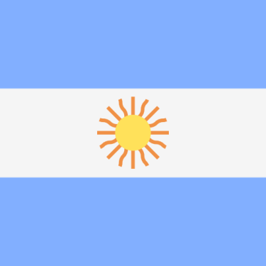
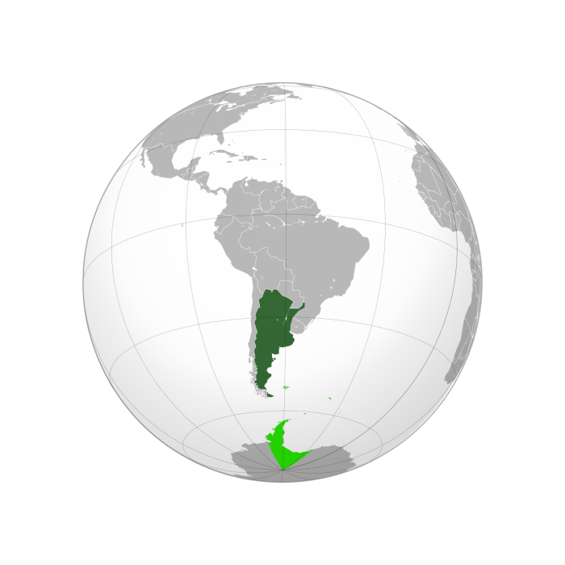

`

Argentina Flag
Argentina was chosen as the host nation by FIFA on 6 July 1966 in London, England, when the hosts for 1974, 1978 and 1982 editions were chosen. Mexico withdrew from the bidding process after having been awarded the 1970 event two years earlier.

Argentina Location
The monetary cost of preparing to host the World Cup was put at $700 million, including building three new stadia and redeveloping three others; building five press centres; a new communications system costing $100 million; and improvements to transport systems.